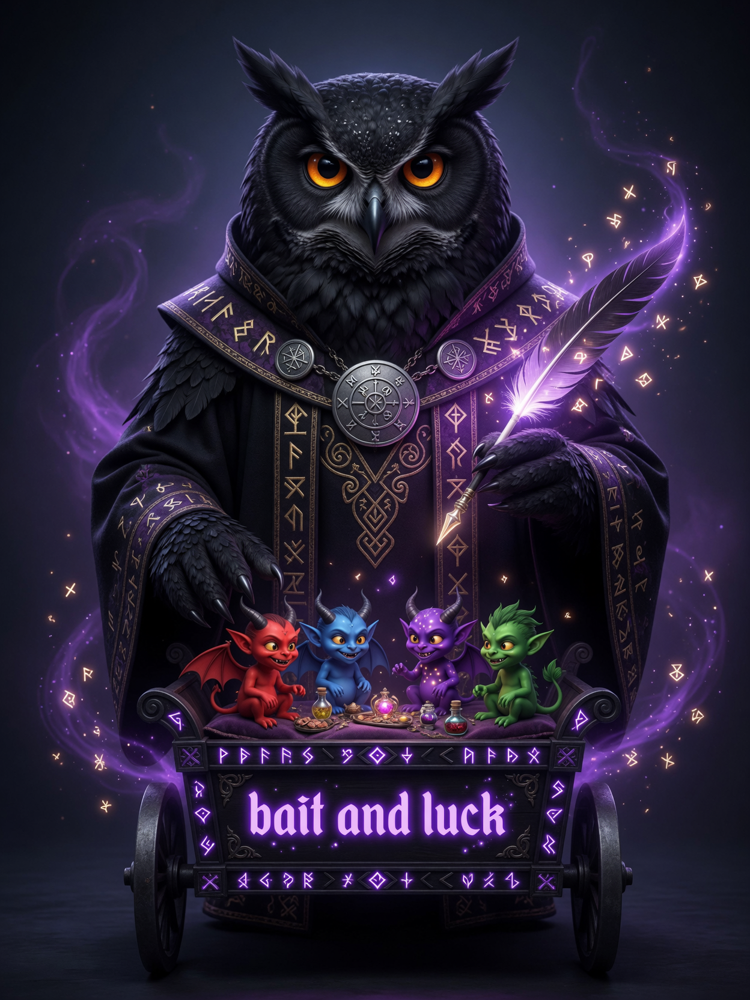
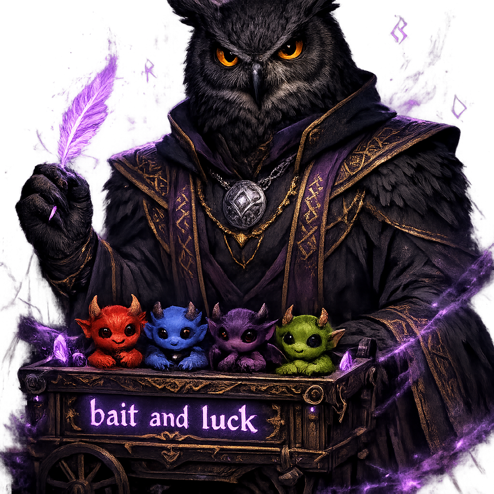
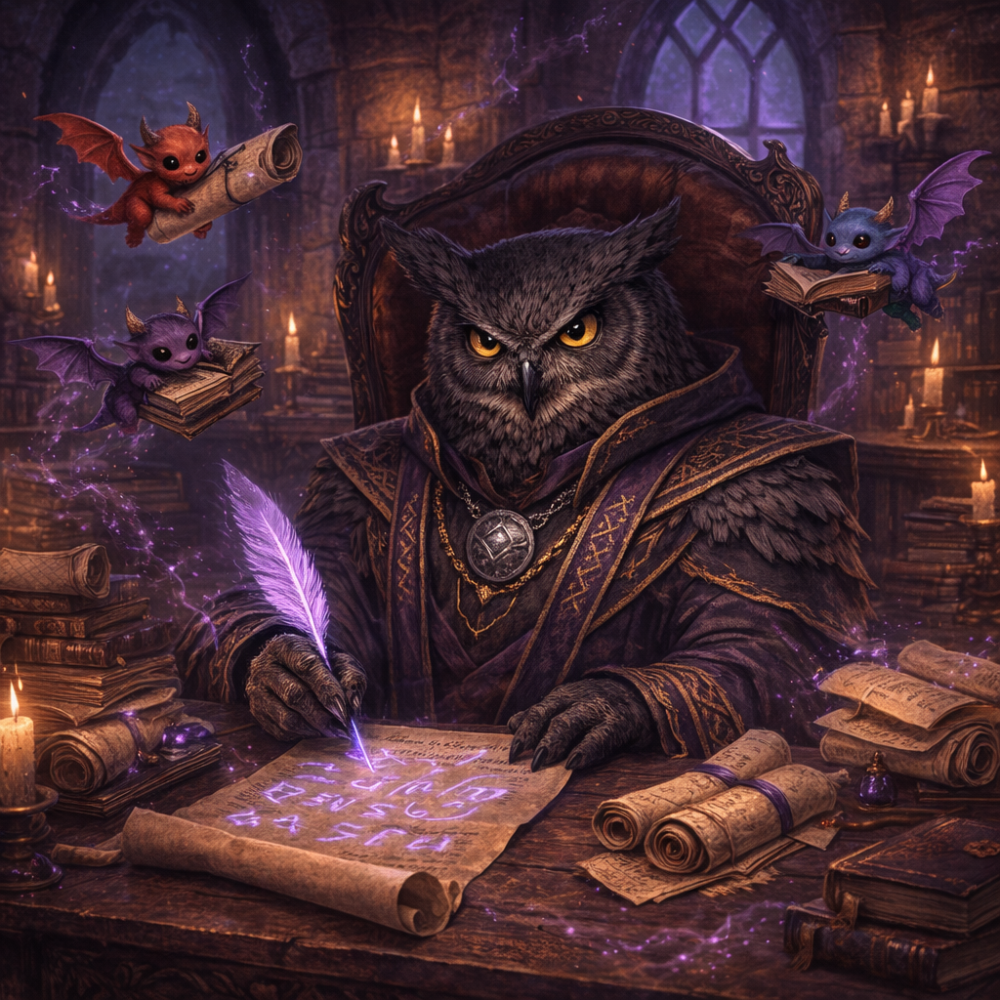

Эвелин Блэкхарт
Совлин
- Возраст
- 34 лет
- Пол
- Мужской
- Рост
- 192 см
- Специальность
- Демонолог-Рунолог (синтез рунической и демонической магии)
Внешность (кратко)
Высокий, худощавый совлин с изящным птичьим профилем, острым янтарным взглядом и бледной кожей. Вместо волос — густое чёрное совлинье оперение, плавно переходящее в короткие перья на висках и затылке. Носит потрёпанный чёрный плащ с высоким воротником и множество мелких рунических амулетов на шее и запястьях. Движения плавные, почти хищные.
Предыстория
Эвелин Блэкхарт — последний представитель некогда могущественного рода хранителей рунической магии из северных предгорий Королевства Аэлир. Во время Великой Торговой Войны его родовой замок был разграблен и сожжён, почти вся семья погибла. Вернувшись из Академии Рунических Наук, юный Эвелин нашёл лишь пепелище. От отчаяния и голода он проник в запретную секцию академической библиотеки и заключил пакт с младшим демоном по имени Зекс, отдав часть своей совлиньей сущности в обмен на власть над малыми демонами Бездны. За десять лет он создал уникальную систему, где руническая магия и демонология дополняют друг друга: двенадцать мелких демонят носят его руны на телах и служат ему шпионами, посыльными и источником силы. Сейчас Эвелин только что прибыл в Золотой Круг с последним весенним караваном. У него почти нет денег, но есть амбициозный план: купить заброшенную башню алхимика в Теневом квартале, проникнуть в Гильдию Тайных Искусств и в итоге восстановить былое величие рода Блэкхарт — даже если для этого придётся погрузиться ещё глубже в запретные искусства.
Характер
Хладнокровный, расчётливый и крайне терпеливый. Говорит тихо, вежливо, с лёгкой ироничной улыбкой. Внешне спокоен и учтив, но внутри — жёсткий прагматик, готовый на всё ради цели. Обладает сухим чёрным юмором и лёгким презрением к тем, кого считает слабыми или недальновидными. Верен только себе и своей крови. Зекс для него одновременно партнёр, инструмент и постоянное напоминание о цене, которую он уже заплатил.
Особая способность
«Рунические Демоны» — Эвелин может призывать и контролировать до двенадцати мелких демонят, каждый из которых отмечен его персональной руной. Демоны способны становиться почти невидимыми, проникать в труднодоступные места, подслушивать, шпионить и выполнять мелкие поручения. Через руны Эвелин получает от них информацию в реальном времени и может передавать им части своей магической силы. Чем больше рунических символов он создаёт и подпитывает, тем сильнее и многочисленнее могут становиться его демонические слуги. Зекс же выступает как «надзиратель» и советчик, усиливая контроль и помогая в сложных ритуалах.
Positive Prompt (для генерации):
---
Negative prompt (для генерации:)
---
Flux Positive Prompt (для генерации):
---
Flux Negative Prompt (для генерации):
---